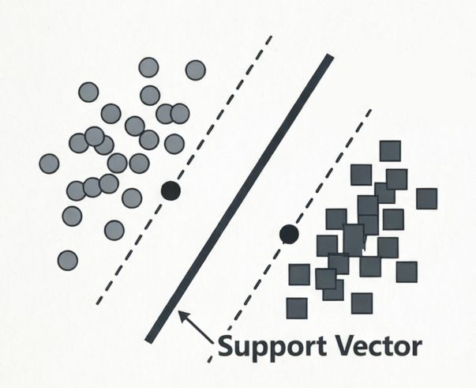
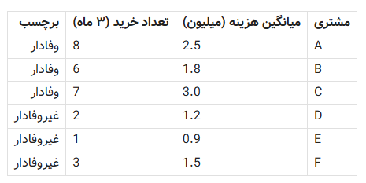
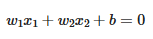

سایر بخشهای این سلسله مقالات را از دست ندهید:
کدام مدل هوش مصنوعی برای کدام مسئله مناسب است؟ - بخش اول (Naive Bayes)
کدام مدل هوش مصنوعی برای کدام مسئله مناسب است؟ - بخش دوم (رگرسیون)
کدام مدل هوش مصنوعی برای کدام مسئله مناسب است؟ بخش سوم(SVM)
کدام مدل هوش مصنوعی برای کدام مسئله مناسب است؟-بخش چهارم (درخت تصمیم-جنگل تصادفی)
کدام مدل هوش مصنوعی برای کدام مسئله مناسب است؟ - بخش پنجم(K-means)
کدام مدل هوش مصنوعی برای کدام مسئله مناسب است؟ بخش ششم و آخر(KNN)
در بخش سوم این مقاله به بررسی یکی از قدرتمندترین و در عین حال زیباترین مدلهای کلاسیک یادگیری ماشین—یعنی ماشین بردار پشتیبان (Support Vector Machine یا SVM)—میپردازیم. هرچند تصور ما از SVM معمولاً مدلی است با خطوط جداکننده هوشمند - حتی در فضاهای پیچیدهای با بسیاری از ویژگیها - که دو یا چند دسته را از هم جدا میکنند، اما هدف ما در اینجا ورود به جزئیات و پیچیدگیهای ریاضی نیست، بلکه درک منطق عملیاتی آن و شناسایی سناریوهای واقعی است که طی آنها SVM عملکردی برتر از سایر مدلهای کلاسیک دارد.
خواهیم دید که SVM چگونه با یافتن «بهترین مرز» بین دو یا چند دسته، نه تنها دقت بالایی در دادههای آموزشی دارد، بلکه توانایی بسیار عالی در تعمیمدهی به دادههای جدید نیز از خود نشان میدهد—مخصوصاً وقتی تعداد نمونهها محدود است ولی تعداد ویژگیها نسبتاً زیاد (مثلاً در تشخیص چهره یا طبقهبندی متن). همچنین با مفهوم هستهها (Kernels) آشنا میشویم: ترفند هوشمندانهای که به SVM اجازه میدهد حتی الگوهای غیرخطی پیچیده را بدون افزایش محاسبات سنگین، تشخیص دهد.

با ذکر مثالهایی از حوزههایی مانند پزشکی (تشخیص سرطان از تصاویر پاتولوژی)، بازاریابی (طبقهبندی مشتریان بر اساس رفتار خرید)، و تحصیلات دانشگاهی (پیشبینی ریسک ترک تحصیل دانشجویان)نشان خواهیم داد که چرا SVM هنوز پس از دههها، در بسیاری از سیستمهای صنعتیِ حساس و دقیق، گزینهٔ اول مهندسان هوش مصنوعی محسوب میشود—نه به خاطر جدید بودن، بلکه به خاطر ثبات، دقت و کارایی آن در شرایط واقعی.مبانی و مراحل SVM
ابتدا مبانی و مراحل دستهبندی با استفاده از SVM را بررسی میکنیم—نه با فرمول و نمودار پیچیده، بلکه با یک مثال واقعی از دنیای پزشکی: تشخیص سرطان از تصاویر پاتولوژی.
فرض کنید یک پزشک یا سیستم هوشمند باید از میان هزاران سلول زیر میکروسکوپ، تشخیص دهد کدامها سالم و کدامها سرطانی هستند. هر سلول با ویژگیهایی مثل اندازهٔ هسته، شکل غشای سلولی و بافت اطراف توصیف میشود—ویژگیهایی که در قالب اعداد قابل اندازهگیریاند.
در اینجا، SVM وارد عمل میشود: به جای اینکه فقط یک خط ساده بکشد، سعی میکند هوشمندانهترین مرز ممکن را بین دو گروه «سرطانی» و «غیرسرطانی» پیدا کند—مرزی که نه تنها دادههای آموزشی را خوب جدا میکند، بلکه برای سلولهای جدید هم بهترین حدس را بزند.
هدف ما در این بخش این است که نشان دهیم SVM چگونه در چنین موقعیتهای حساسی—جایی که اشتباه یک مدل میتواند پیامدهای جانی داشته باشد—با دقت بالا و پایداری مناسب، به عنوان یک ابزار قابل اعتماد عمل میکند.
حل چنین مسئلهای با استفاده از الگوریتم SVM شامل مراحل ذیل است:
۱. جمعآوری و برچسبگذاری دادهها
دادههای ورودی (مثلاً تصاویر سلولها) جمعآوری میشوند و هر کدام دستی یا توسط متخصصان پزشکی برچسب میخورند: «سرطانی» یا «سالم». بدون این برچسبها، SVM نمیتواند یاد بگیرد.
۲. استخراج ویژگیها
هر تصویر به مجموعهای از اعداد قابل اندازهگیری تبدیل میشود—مثلاً اندازهٔ هسته، نامنظمی شکل سلول، چگالی رنگآمیزی و غیره. این اعداد، «ویژگیها» هستند که SVM بر اساس آنها تصمیم میگیرد.
۳. نرمالسازی دادهها
مقادیر ویژگیها به یک بازهٔ مشترک (مثلاً بین ۰ تا ۱) تبدیل میشوند تا ویژگیهایی با مقیاس بزرگ (مثل مساحت سلول بر حسب میکرومتر مربع) روی ویژگیهای کوچکمقیاس (مثل نسبت عرض به طول) تأثیر ناعادلانه نگذارند.
۴. انتخاب هسته (Kernel)
SVM باید تصمیم بگیرد که مرز جداکننده چقدر پیچیده باشد:
-
اگر الگوی دادهها ساده است، از هسته خطی استفاده میشود (مرز یک خط صاف است).
-
اگر الگوها پیچیدهاند (مثل سلولهای سرطانی که در فضای ویژگیها به هم تنیدهاند)، از هسته غیرخطی مثل RBF استفاده میشود تا مرز منعطفتری ساخته شود. در انتهای این مقاله به بیشتر در مورد RBF خواهم نوشت.
۵. آموزش مدل (یادگیری مرز بهینه)
SVM دنبال آن است که عرض حاشیه (فاصله بین مرز و نزدیکترین نقاط دو دسته) را بیشینه کند. این کار باعث میشود مدل نه فقط دادههای آموزشی را درست دستهبندی کند، بلکه برای دادههای جدید هم خطای کمتری داشته باشد. به عبارت بهتر هم باید مرز مشخصی پیدا کنیم و هم این مرز به قدر کافی از دو طرف حاشیه امن- فاصلهٔ کافی تا نزدیکترین نمونهها، تا مدل در برابر نویز یا تغییرات کوچک در دادههای جدید حساس نباشد-داشته باشد. این دقیقاً همان چیزی است که تعمیمپذیری SVM را بالا میبرد—یعنی اینطور نباشد که فقط روی دادههای دیدهشده خوب عمل کند، بلکه روی دادههای جدید هم قابل اعتماد باشد.
۶. ارزیابی و پیشبینی
مدل روی دادههایی که قبلاً ندیده (دادههای آزمون) تست میشود تا دقت واقعیاش سنجیده شود. سپس، برای هر سلول جدید، تشخیص میدهد و تصمیم میگیرد که: «این سلول با اطمینان بالا، سرطانی است» یا «سالم به نظر میرسد».
این مراحل نشان میدهند که SVM فقط یک «فرمول هوشمند» نیست، بلکه یک فرآیند ساختاریافته است که با دقت و منطق، در مسائل حساس دنیای واقعی به کار گرفته میشود.
حال مسئله دیگری را به عنوان مثال در نظر گرفته و با مقادیر عددی مشخص مراحل گفته شده را تشریح می کنیم. مثال دوم در حوزه بازاریابی و در موضوع طبقهبندی مشتریان بر اساس رفتار خرید آنان است.
مثال: طبقهبندی مشتریان بر اساس رفتار خرید آنان
فرض کنید یک فروشگاه آنلاین میخواهد مشتریان را به دو دسته تقسیم کند:
-
وفادار
-
غیروفادار
متخصصان بازاریابی بر اساس بررسی رفتار بلندمدت ۱۰۰۰ مشتری، دستی هر کدام از آنها را برچسب «وفادار» یا «غیروفادار» زدهاند—نه فقط بر اساس تعداد خرید، بلکه با در نظر گرفتن بازگشت کالا، تعامل با ایمیلها، مدت عضویت و غیره.»
حالا ما یک مجموعه دادهٔ برچسبخورده داریم که برچسبها هوش انسانی + تجربه را منعکس میکنند—ولی قاعدهٔ سادهای برای آنها وجود ندارد.
هدف SVM این است که الگوی پنهان در این برچسبها را یاد بگیرد و برای مشتریان جدید پیشبینی کند.
ما در اینجا و به منظور حفظ سادگی، فقط از دو ویژگی استفاده میکنیم:
۱. میانگین هزینه هر خرید (به میلیون تومان)
۲. تعداد خرید در ۳ ماه گذشته
مرحله ۱: جمعآوری و برچسبگذاری دادهها
دادههای ۶ مشتری قدیمی در دسترس است:

دادههای نمونه برای آموزش مدل
مرحله ۲: استخراج ویژگیها
ویژگیها همان ستونهای دوم و سوم هستند—هر مشتری یک نقطه در فضای دو بعدی است:
-
A = (2.5, 8)
-
D = (1.2, 2)
و غیره.
مرحله ۳: نرمالسازی
مقادیر را به بازهٔ [0, 1] تبدیل میکنیم (با روش Min-Max):
-
بیشترین هزینه = 3.0، کمترین = 0.9 → محدوده = 2.1
-
بیشترین تعداد خرید = 8، کمترین = 1 → محدوده = 7
مشتری A پس از نرمالسازی:
-
هزینه: (2.5 − 0.9) / 2.1 ≈ 0.76
-
تعداد: (8 − 1) / 7 = 1.0
→ A = (0.76, 1.0)
همین کار برای بقیه ردیفهای جدول هم انجام میشود.
مرحله ۴: انتخاب هسته
دادهها در نمودار بهوضوح با یک خط صاف قابل جدا کردن هستند (مشتریان وفادار هم هزینه بالاتر دارند، هم تعداد خرید بیشتر). پس از هسته خطی استفاده میکنیم.
مرحله ۵: آموزش مدل (یادگیری مرز بهینه)
SVM سعی میکند خطی را پیدا کند که:
-
دو گروه را کاملاً از هم جدا کند
-
عرض حاشیه (فاصله تا نزدیکترین نقاط) را بیشینه کند
این خط در فضای دو بعدی به شکل کلی زیر است:

معادله خط SVMکه در آن:
-
x_1 = هزینه نرمالشده
-
x_2 = تعداد خرید نرمالشده
-
w_1,w_2 = وزنهایی که جهت عمود بر خط را تعیین میکنند
-
b = عرض از مبدأ (bias)
در مثال ما فرض کنید پس از محاسبه، معادلهٔ مرز بهینه به این شکل است:
0.6 × (هزینه نرمالشده) + 0.8 × (تعداد نرمالشده) − 1.0 = 0
این خط، دو مشتری «مرزی» (مثلاً B و F) را به عنوان بردارهای پشتیبان انتخاب میکند—یعنی تنها این دو نقطه تعیینکنندهٔ مرز هستند. اما این اعداد و ضرایب چگونه بدست آمده اند.
الگوریتم SVM این سه عدد را با حل یک مسئلهٔ بهینهسازی پیدا میکند که هدف آن بیشینه کردن حاشیه است—با این محدودیت که همهٔ نقاط دستهٔ «وفادار» در یک سمت خط و همهٔ «غیروفادارها» در سمت دیگر باشند.
در عمل، این کار با روشهای ریاضی پیشرفته (مثل روش لاگرانژ و حل دوگان مسئله) انجام میشود، اما نکتهٔ کلیدی این است:
فقط مشتریانی که خیلی نزدیک به مرز بین «وفادار» و «غیروفادار» هستند—که به آنها «بردارهای پشتیبان» میگوییم—روی شکل نهایی آن خط تأثیر میگذارند.
برای فهم بهتر میخواهم کمی سادهتر توضیح دهم. خط مرزی مثل یک طناب کشدار بین دو گروه است. تصور کنید دو تیم («وفادارها» و «غیروفادارها») در دو سمت یک زمین ایستادهاند. میخواهیم طنابی بین آنها بکشیم تا هیچکس از یک سمت به سمت دیگر نرود. اما در عینحال نمیخواهیم طناب را بچسبانیم به اولین نفری که میبینیم—بلکه میخواهیم بیشترین فاصله ممکن بین طناب و هر دو تیم باشد، تا فضا برای حرکت داخل هر تیم باقی بماند.
حالا، وقتی طناب را میکشیم، فقط دو نفر واقعاً روی شکل نهایی طناب تأثیر میگذارند:
-
نزدیکترین نفر از تیم چپ
-
نزدیکترین نفر از تیم راست
بقیهٔ افراد، هرچقدر دورتر باشند، هیچ تأثیری روی جای طناب ندارند.
اگر آن دو نفر جابهجا شوند، طناب هم جابهجا میشود. اگر بقیه حرکت کنند ولی این دو ثابت بمانند، طناب همانجا میماند.
اما در SVM:
-
«طناب» = همان خط جداکنندهٔ SVM
-
«آن دو نفر نزدیک» = همان بردارهای پشتیبان (مثل مشتری B و F در مثال)
-
«فاصلهٔ بیشینه» = همان حاشیهٔ بزرگی استکه SVM به دنبال آن است
وقتی SVM آموزش میبیند، فقط به این دو (یا چند) نقطهٔ مرزی نگاه میکند و از بقیه نقاط صرفنظر میکند.
پس معادلهٔ خط نهایی—یعنی ضرایب w1,w2,bw1,w2,b—کاملاً توسط این نقاط مرزی تعیین میشود.
در مثال ما، فرض کنیم مشتریان B = (0.43, 0.71) و F = (0.29, 0.29) (پس از نرمالسازی) به عنوان بردارهای پشتیبان انتخاب شدهاند—یعنی نزدیکترین نقاط به مرز.
SVM خطی را پیدا میکند که:
-
از وسط فاصلهٔ بین B و F عبور کند
-
بر خط واصل آن دو عمود باشد
اگر این محاسبات را انجام دهیم (یا از یک کتابخانهٔ هوش مصنوعی مثل scikit-learn استفاده کنیم)، ممکن است دقیقاً به ضرایبی نزدیک به w₁ = 0.6, w₂ = 0.8, b = −1.0 برسیم—چون این ترکیب، خطی میسازد که:
-
از میان حاشیه عبور میکند
-
طول بردار وزن sqrt{0.8^2 + 0.6^2} = 1 است (یعنی نرمالایز شده)
-
نقاط B و F دقیقاً روی لبههای حاشیه قرار میگیرند
البته باید توجه داشت که نیازی نیست این معادله را دستی محاسبه کنید. وقتی از SVM استفاده میکنید، کافی است دادهها را به آن بدهید—الگوریتم بهطور خودکار بهترین w_1,w_2,b را پیدا میکند.
آنچه مهم است درک این نکته است که:
-
SVM فقط به نقاط «مرزی» توجه میکند
-
هدفش نه صرفاً جدا کردن دادهها، بلکه ایجاد حاشیهٔ ایمن بین آنهاست. این همان چیزی است که به SVM کمک میکند در دادههای جدید هم خوب عمل کند (تعمیمپذیری بالا)
پس معادلهٔ بالا فقط یک نمایش عددی از همان «هوش جداکنندگی» است که SVM در دادهها پیدا کرده است.
مرحله ۶: پیشبینی برای مشتری جدید
یک مشتری جدید میآید:
-
میانگین هزینه = 2.0 میلیون
-
تعداد خرید = 5
پس از نرمالسازی:
-
هزینه = (2.0 − 0.9)/2.1 ≈ 0.52
-
تعداد = (5 − 1)/7 ≈ 0.57
امتیاز SVM = 0.6×0.52 + 0.8×0.57 − 1.0 ≈ 0.312 + 0.456 − 1.0 = −0.232
چون نتیجه منفی است، مدل تصمیم میگیرد: این مشتری را غیروفادار بداند—هرچند نزدیک به مرز است و شاید با یک تخفیف ویژه بتوان او را وفادار کرد!
نقش RBFدر الگوریتم SVM
مشکل اصلی ایناست که دادهها همیشه با یک خط صاف قابل جدا کردن نیستند. تصور کنید در مثال مشتریان، برخی از افراد که با هزینهٔ خیلی بالا ولی تعداد بسیار کم خرید میکنند (مثل خریدهای لوکس فصلی) و برخی دیگر که با هزینهٔ پایین ولی مکرر خرید میکنند (مثل خرید روزمره) هر دو «وفادار» باشند. در این حالت، دادهها در نمودار دو بعدی به شکل دایرهای یا خوشههای پراکنده ظاهر میشوند—نه دو گروه خطیِ تمیز.
در چنین شرایطی، SVM با هستهٔ خطی شکست میخورد، چون هیچ خط مستقیمی نمیتواند این الگوی پیچیده را جدا کند.
راهحل چیست؟ ترفند هوشمندانهٔ RBF:
هستهٔ RBF یک تبدیل غیرخطی است که به SVM اجازه میدهد مرزهای منحنی و انعطافپذیر بسازد—بدون اینکه واقعاً دادهها را به فضای با ابعاد بالاتر (که طبعاْ محاسباتی سنگین دارد) منتقل کند.
منطق سادهٔ RBF چیست؟
به جای اینکه بپرسیم «آیا این مشتری در سمت «وفادارها» قرار دارد یا در سمت «غیروفادارها»؟»، RBF میپرسد:
«آیا این نقطه نزدیک به نقاطی از دستهٔ A است یا به نقاط دستهٔ B؟»
این «نزدیکی» با یک تابع نمایی محاسبه میشود که هرچه فاصله بیشتر باشد، شباهت به سرعت کاهش مییابد.
یک مثال بصری ساده:
فرض کنید دادههای شما مثل یک هدف تیراندازی باشند:
-
مرکز (دایرهٔ داخلی): مشتریان وفادار
-
حلقهٔ بیرونی: مشتریان غیروفادار
هیچ خط مستقیمی نمیتواند این دو حلقه را جدا کند.
اما RBF میتواند یک مرز دایرهای بسازد—چون به جای خط، از فاصلهٔ هر نقطه تا مرکز خوشهها استفاده میکند.-
چرا RBF محبوب است؟ زیرا برای دادههای غیرخطی و پیچیده عالی عمل میکند. فقط یک پارامتر مهم دارد (γ یا gamma) که کنترل میکند «ناحیهٔ تأثیر» هر نقطه چقدر باشد. در عمل، در بسیاری از مسائل واقعی (مثل تشخیص چهره، تشخیص تقلب، طبقهبندی متن) بهترین نتیجه را میدهد.
نکتهٔ کلیدی در این روش ایناست که RBF به SVM قدرت تشخیص الگوهای پیچیده را میدهد، بدون اینکه مجبور شویم بصورت دستی ویژگیهای جدید بسازیم. این همان چیزی است که SVM را از یک «جداکنندهٔ خطی ساده» به یک ابزار قدرتمند برای دنیای واقعی تبدیل میکند.
مفهوم Hyperplane در SVM
در مسائل واقعی که SVM در آنها به کار میرود، خیلیوقتها فضای دادهها بیش از دو بعد دارد. بطوریکه ممکن است هر نمونه دهها یا حتی هزاران ویژگی داشته باشد—مثلاً در تشخیص چهره، هر پیکسل یک ویژگی است، یا در طبقهبندی متن، هر کلمه یک بعد محسوب میشود.
در چنین فضاهای چندبعدی، دیگر نمیتوان از «خط» صحبت کرد. به جای آن، از اصطلاح «هایپرپلین» (Hyperplane) استفاده میشود.
سادهترین تعریف هایپرپلین چیست؟
هایپرپلین مرز جداکنندهای است که در یک فضای n بعدی، ابعاد را به دو قسمت تقسیم میکند—و خودش همیشه یک بعد کمتر از فضای اصلی است.
-
در فضای ۲ بعدی (مثل یک صفحه کاغذ): هایپرپلین = یک خط (۱ بعدی)
-
در فضای ۳ بعدی (مثل یک اتاق): هایپرپلین = یک صفحهٔ مسطح (۲ بعدی)
-
در فضای ۱۰۰۰ بعدی: هایپرپلین = یک ساختار ۹۹۹ بعدی است که دو گروه داده را از هم جدا میکند!
یک مثال ساده که داده های آن در فضای n بعدی قرار دارند پیشبینی ریسک ترک تحصیل دانشجویان (Student Dropout Risk Prediction) است.
مثال از دادههای n بعدی : پیشبینی ریسک ترک تحصیل دانشجویان
در یک محیط دانشگاهی، هدف این است که با استفاده از دادههای موجود، دانشجویانی را که احتمال ترک تحصیل دارند، زودهنگام شناسایی کنی بلکه تا تیمهای مشاوره و آموزش بتوانند مداخلات هدفمند (مثل جلسات حمایتی، کمکهای مالی یا برنامهریزی تحصیلی) را در زمان مناسب انجام دهند.
برای این کار، از SVM به عنوان یک ابزار هوشمند دستهبندی استفاده میکنیم. دادههای تاریخی دانشجویان—که شامل رفتارها، عملکرد و شرایط زندگی آنهاست—ورودیهای این مدل هستند.
۱. دادهها (ورودیها): فضای چندبعدی دانشجو
هر دانشجو در این مدل، یک نقطه در فضای چندبعدی است. هر ویژگی (متغیر) یک «بعد» از این فضا را تشکیل میدهد. برای مثال، ممکن است از ویژگیهای زیر استفاده کنیم:
-
میانگین نمرات ترمهای قبلی
-
درصد حضور در کلاسها
-
میانگین نمرهٔ تکالیف و پروژهها
-
تعداد دروس ردشده
-
میزان مشارکت در فعالیتهای علمی یا فرهنگی دانشگاه
-
وضعیت مالی (مثلاً دریافت بورسیه یا وام ، بدهی در شهریه ، تأخیر در پرداخت و دفعات درخواست استمهال در پرداخت بدهی و …)
-
فاصلهٔ جغرافیایی محل سکونت از دانشگاه
-
سابقهٔ مشاورهٔ روانشناختی
-
حتی دادههای رفتاری از سیستمهای یادگیری آنلاین (مثل زمان ورود به پلتفرم، تعداد بازدید از جزوات)
اگر ۱۰ ویژگی داشته باشیم، هر دانشجو یک نقطه در فضای ۱۰ بعدی است. اگر ۵۰ ویژگی داشته باشیم، فضای ما ۵۰ بعدی خواهد بود—و این البته در دنیای دادههای واقعی کاملاً طبیعی است.
۲. دستهبندی (خروجی): یادگیری مرز هوشمند
SVM از دادههای تاریخی—که برچسبخوردهاند (مثلاً «انصرف از تحصیل»، «اخراج» یا «شاغل به تحصیل»)—یاد میگیرد که چگونه یک هایپرپلین (مرز جداکننده در فضای n بعدی) بین دو گروه بسازد:
-
گروه ۱: دانشجویانی که شاغل به تحصیل هستند (ریسک پایین)
-
گروه ۲: دانشجویانی که تحصیل را ترک کردهاند (ریسک بالا)
هدف SVM فقط جدا کردن این دو گروه نیست، بلکه یافتن بهترین مرز ممکن است—یعنی مرزی که بیشترین فاصله را با نزدیکترین دانشجویانِ هر گروه داشته باشد. این «حاشیهٔ ایمن» باعث میشود مدل در برابر نویز (مثلاً یک دانشجوی خوب که یک ترم بد داشته) مقاوم باشد.
۳. نتیجهٔ عملی
وقتی دانشجوی جدیدی وارد سیستم میشود، مدل تمام ویژگیهای او را جمعآوری کرده و موقعیتش را در این فضای چندبعدی تعیین میکند. اگر این نقطه در سمت «ریسک بالا» و نزدیک به مرز باشد، سیستم هشدار میدهد:
«این دانشجو شبیه به کسانی است که قبلاً ترک تحصیل کردهاند. پیشنهاد میشود تیم مشاوره با او تماس بگیرد.»
در ادامه این مباحث و در بخش بعدی به بررسی الگوریتم درخت تصمیم گیری و جنگل تصادفی میپردازیم.
سایر بخشهای این سلسله مقالات را از دست ندهید:
کدام مدل هوش مصنوعی برای کدام مسئله مناسب است؟ - بخش اول (Naive Bayes) کدام مدل هوش مصنوعی برای کدام مسئله مناسب است؟ - بخش دوم (رگرسیون)
کدام مدل هوش مصنوعی برای کدام مسئله مناسب است؟ بخش سوم(SVM) کدام مدل هوش مصنوعی برای کدام مسئله مناسب است؟-بخش چهارم (درخت تصمیم-جنگل تصادفی) کدام مدل هوش مصنوعی برای کدام مسئله مناسب است؟ - بخش پنجم(K-means) کدام مدل هوش مصنوعی برای کدام مسئله مناسب است؟ بخش ششم و آخر(KNN)